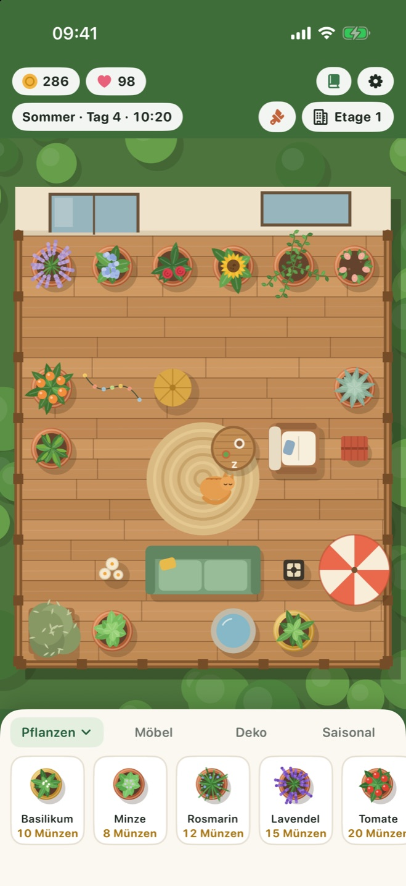
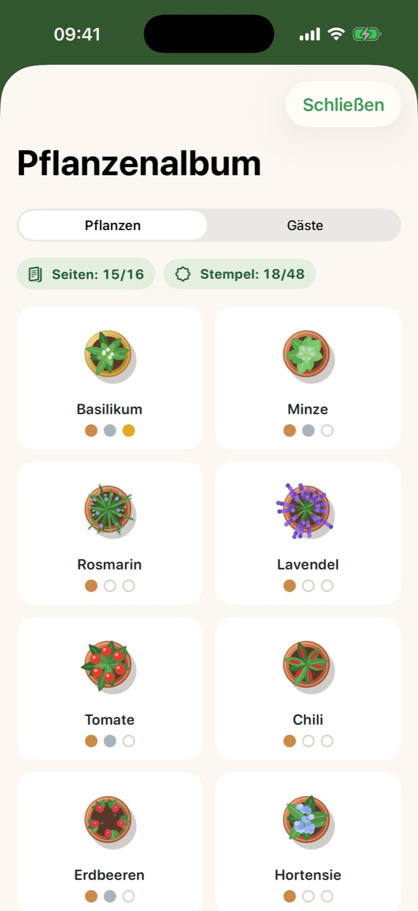
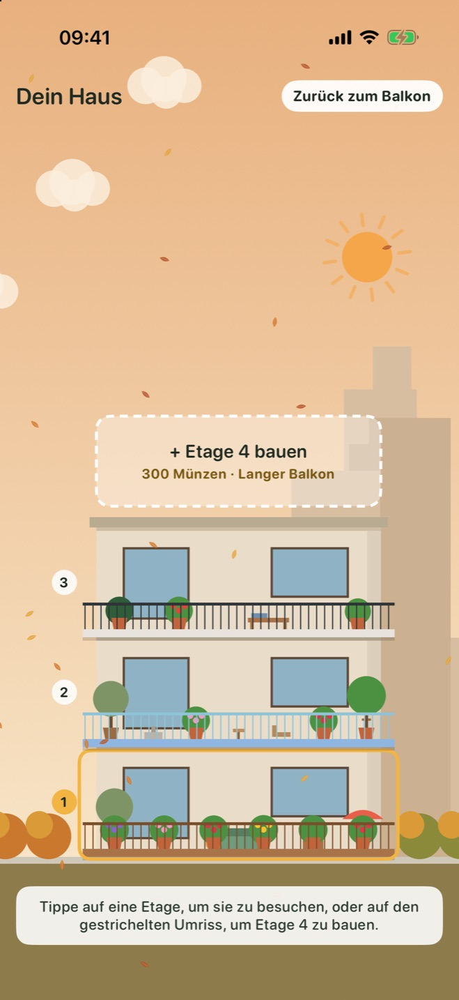

Wächst in Echtzeit
Ein Spieltag dauert eine echte Stunde. Kurze, ruhige Besuche passen in deinen Tag, und wenn du zurückkommst, ist immer etwas reif.
Für iPhone und iPad
Pflanze Kräuter, Blumen und Obst, gestalte deinen Balkon, erlebe die Jahreszeiten und empfange gefiederte und pelzige Gäste. Ein bisschen Ruhe für jeden Tag.
Zieh eine Pflanze auf deinen Balkon, gieß sie bei Durst und ernte sie, wenn sie reif ist.
Stell Sofas, Laternen und Brunnen auf und lege neue Böden aus. Ein gemütlicher Balkon bringt mehr ein und lockt mehr Gäste an.
Dein Garten wächst weiter, auch wenn die App geschlossen ist. Eine vergessene Pflanze geht nie ein, sie wartet nur auf Wasser.
Alles für ein ruhiges tägliches Ritual und nichts, was dich hetzt.
Ein Spieltag dauert eine echte Stunde. Kurze, ruhige Besuche passen in deinen Tag, und wenn du zurückkommst, ist immer etwas reif.
Frühlingsregen gießt deine Pflanzen, Sommersonne lässt Tomaten reifen, im Herbst fliegt Laub und im Winter liegt Schnee auf dem Geländer.
Stell Möbel und Deko auf ein Raster und wechsle zu Holzdielen, Marmor oder Mosaik und einem neuen Geländer.
Schmetterlinge, Bienen, eine Eule, ein Eichhörnchen und die Katzen der Nachbarn schauen vorbei. Find heraus, was jeder mag, und vielleicht zieht eine Katze ein.
Fülle dein Pflanzenalbum mit Wachstumsstufen und Erntestempeln und vervollständige es, um einen besonderen Zitronenbaum freizuschalten.
Spare Münzen für neue Etagen mit eigener Balkonform und sieh zu, wie sich dein Haus mit den Jahreszeiten verändert.
Beauftrage einen Gärtner, der auf allen Etagen durstige Pflanzen gießt und reife erntet, gegen eine kleine Gebühr. Alle vier Stunden verfügbar.
Speichere deinen Garten unter einem Namen und kehre jederzeit dorthin zurück. Bis zu zehn Spielstände möglich.
Aktiviere die iCloud-Synchronisierung, und dein Garten begleitet dich zwischen iPhone und iPad. Optional und nur in deinem eigenen Apple-Account.



Ein kostenloser Download für beide. Auf dem iPad bekommt der Balkon mehr Platz und zeigt mehr von der Nachbarschaft.
Der Balkon bleibt auf jedem Bildschirm mittig, und der Garten reicht bis an den Rand rund um die Statusleiste.
| iPhone | iOS 17 oder neuer |
|---|---|
| iPad | iPadOS 17 oder neuer |
| iPhone Duo | Unterstützt |
| Preis | Kostenlos. Keine Werbung und keine In-App-Käufe. |
|---|---|
| Konto | Nicht nötig. Funktioniert offline. |
| Fortschritt | Auf deinem Gerät gespeichert, bei aktiver Synchronisierung auch in deinem eigenen iCloud. |
Balcony Bloom hat keine Server, keine Analyse und keine Werbung. Nichts, was du im Spiel tust, erreicht jemals den Entwickler. Datenschutzerklärung lesen
Lies die häufigen Fragen oder öffne ein Issue, um einen Fehler zu melden oder eine Idee vorzuschlagen.